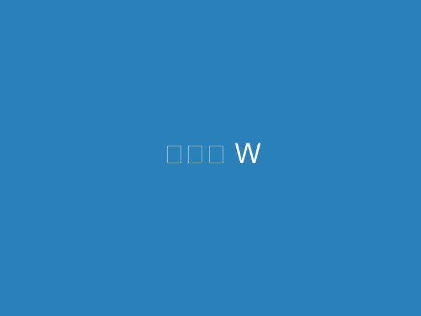

디멘션 W
18 nov. 2023 — 코일의 위에 전원 버튼 모양이 새겨져 있는 원뿔대 형태의 장치다. 2036년, 제 4의 차원축, ‘W’의 존재와 그곳에 내장되어 있는 무한한 에너지를 발견하여 …28 iun. 2017 — 디멘션 W는 총 12부작으로 15세이상 관람가이며. 2016.01.10~2016.03.27에 방영한 작품입니다. 방영중인 작품보다 완결된 작품들을 주로 챙겨보다 …21 nov. 2019 — 양자론의 ‘관측할 때 까지는 확률로만 표시할 수밖에 없다’라는 한 마디를 기준으로 ‘가능성’이란 데 착안해 ‘디멘션(차원)W’에너지를 설정했다고 말하고 …디멘션 W. [ COMIC, 완결 ]. YUJI IWAHARA 저 | 학산문화사 | 2020년 06월 12일 저자/출판사 더보기/감추기. 첫번째 리뷰어가 되어주세요 | 판매지수 1,248.18 sept. 2018 — <디멘션 W> 차원간 전자유도장치.통칭 ‘코일’이라 불리는 발명품의 탄생에 의해 에너지 문제가 해결된 2072년─. 불법 코일 ‘회수인’을 생업으로 삼고 …만화 e북 · 차원축 「W」의 비밀에 다가가는 운명의 만남! · 디멘션 W · 서비스 · 기타 문의 · 회사.Dimension W is a Japanese manga series written and illustrated by Yūji Iwahara. It was published in Square Enix’s seinen manga magazine Young Gangan from …제 4차원 「W」에서 무한의 에너지를 빼낼 수 있는 「코일」에 의해, 인류는 번영의 극치를 맞이했다. 하지만 그 이면에는 정규외 루트로 … 디멘션 W. Dimension W …디멘션 W 4. 이와하라 유지(岩原 裕二) 저이슬 역 학산문화사 2014.09.25. 판매지수 15. 할인가. 4,500 원 정가5,000원 10%↓할인.9 apr. 2023 — 3차원과는 다른 차원이 실존하며, 이를 디멘션 W라고 부른다. 디멘션 W는 통상의 3차원에서는 진입할 수 없는 차원이고 비물질 차원이다. 하지만 3차원과 …[eBook] [고화질] 디멘션 W 16 (완결). 이와하라 유지 (지은이) 학산문화사 2020-06-12. 정가. 2,500원. 판매가. 2,500원 + 120원 …[eBook] 디멘션 W (체험판). 이와하라 유지 (지은이) 학산문화사 2020-06-12. 대여. 0원 (1일).인터넷쇼핑, 오픈마켓, 패션/뷰티, 디지털, 식품/유아, 스포츠/자동차, 생활용품 , 도서/DVD, 여행/항공권, e쿠폰/티켓, 만화/게임, 공동구매, 경매, 중고, …25 apr. 2014 — 디멘션 W 2 | 이와하라 유지의 만화 『디멘션 W』 제2권. 예고장대로 종합미술관에 아타난 괴도 루저. 안드로이드 미라와 콤비를 짠 불법 코일 ‘회수 …#디멘션w ; 놀숲 위례역점 · February 6, 2019 ; 아비냥북카 · December 23, 2019 ; 놀숲 서울대입구역점 is at 놀숲 서울대입구역점. · January 1, 2020 ; 지식해방전선 · March 6 …22 nov. 2023 — 줄거리. #디멘션 W. 2036년 차원간 전자 유도 장치 코일의 발명으로 인류는 네 번째 차원축 W로 부터 무한 에너지를 꺼내는데 성공하고 획기적인 진화 …19 mai 2016 — 4번째 차원축 W 라는곳에서 무한의 에너지를 공급받고 이를 “코일”이라는 단말(?) 로 사용을 하는 세계관… 여기에 “부정코일”이라는것이 사용되기도 …2036년 차원간 전자 유도 장치 코일의 발명으로 인류는 네 번째 차원축 W로 부터 무한 에너지를 꺼내는데 성공하고 획기적인 진화를 맞이하게 된다. 그로부터 36년 후, …50 Posts – See Instagram photos and videos from ‘디멘션w’ hashtag.2036년 차원간 전자 유도 장치 코일의 발명으로 인류는 네 번째 차원축 W로 부터 무한 에너지를 꺼내는데 성공하고 획기적인 진화를 맞이하게 된다. 그로부터 36년 후, …In the near future, humans have discovered a fourth dimension, Dimension W, and a supposedly infinite source of energy within. In order to harness this …상품명 : [굿스마일][디멘션W] 1/8 유리자키 미라. 사이즈 : 약 155mm. GENERAL PRODUCT 상품 일반정보. 품명 및 모델명, 피규어. 인증.허가 사항, 해당 사항 없음 (15 …도서명, 디멘션 W 5, 저자/출판사, 이와하라 유지 지음/학산문화사. 크기 (전자책의 경우 파일의 용량), 128×188, 쪽수 (전자책의 경우 제외), 216.[성우 소개] 디멘션 W. 우룸 2020. 12. 25. 03:35. 디멘션 W. (ディメンション W – 디멘숀 W). 1. 마부치 쿄마 (CV. 오노 다이스케). 더보기. 주연작 – 캐릭터.디멘션 W. 애니메이션 · 일본 애니메이션 · 시즌 1개 · 평균 3.5. 무료로 감상하기. 서비스 중인 콘텐츠가 아닙니다. 서기 2072년, 인류의 에너지 체계가 석유에서 …10 ian. 2023 — 2015/08/29 – [2016년 1월 신작애니] 디멘션W 등장인물 및 성우정보 2015/07/05 – 이와하라 유지 디멘션W 애니화 결정! 디멘션 더블유 PV 동영상도 …15 ian. 2016 — Dimension W – Opening Theme – Genesis. Watch later. Share. Copy link. Info. Shopping. Tap to unmute. If playback doesn’t begin shortly, …학산문화사(만화) 디멘션 W. 2 최저가 – 도서 > 장르만화 > 이와하라 유지 지음,이슬 옮김.디멘션 W 1화 즐감 즐감하세요 디멘션 W Dimension W ディメンションダブリュー 부정 코일 회수꾼 쿄마와 기묘한 파트너 미라의 이야기를 그린 애니메이션.디멘션 W. 정보. 판타지 전체 이용가. 작가: 이와하라 유지. 찜하기 작품 업데이트 알림. Up Down. 작품정보. #판타지. 전체구매 첫 화 보기 …도서명, 디멘션W 03. 정가, 5,000원. 할인가, 4,500원 ( 500원 할인). 적립금, 250원 (5%). 작가, 이와하라 유지. 출판사, 학산문화사.디멘션 W. Dimension W/ディメンションW. 서기 2072년. 제 4차원 「W」에서 무한의 에너지를 빼낼 수 있는 「코일」에 의해, 인류는 번영의 극치를 맞이했다.디멘션 W 16(완결). Front Cover. 이와하라유지. 학산문화사, Dec 3, 2019 – 284 pages. 0 Reviews. Reviews aren’t verified, but Google checks for and removes …10 oct. 2017 — 디멘션w는 어쩌다가 접하게 된 애니인데요. 제가 워낙 흑의 계약자를 좋아하다 보니 좀 알아보다 보니까 그 작가가 계속해서 연재하는 작품이 있다고 듣게 …[만화책/중고]디멘션 더블유(디멘션W) 1~16권(완결)/무료배송 가격: 47900원 ※필독해주시면 감사하겠습니다’ᴗ'(상태설명필수필독!11 ian. 2016 — 디멘션 W, 생각없이 시작했다가 스타일에 매료되다 2016년 1분기 신작들이 시작되는 타이밍에 꽤나 재미있는 녀석을 발견했다.전화번호만 알면 선물할 수 있어요! 더 자세히 알아보기. 선물하기. 전화번호 입력하고 결제. 카카오톡. 선물 …15 iun. 2016 — 타락천사y의 조그만 쉼터 ☆ 컴퓨터, 유틸, 바탕화면, 애니, 영화 정보 등을 나누며 쉬어가는 곳. 다녀 가실땐 댓글은 필수 입니다.20 mai 2016 — 애니메이션 ‘디멘션W(Dimension W)’에 등장하는 로봇 여주인공 ‘유리자키 미라(百合崎ミラ)’가 피규어로 등장했다. 가격은 1만185엔(..유리자키 박사가 흑막이라는 예상은 어느정도 적중했는데. 노아의 방주 모티브로 진행되는건 좀 … 그리고 엘리랑 의족찬 미.친년이랑.초~~~~ 우주명작 시로바코 감상 완료후뭘볼까 고민하다 예전에 만화책으로 보다가 애니화 됬다는 소식을 들은 디멘션W!! 감상완료했습니다.만화책을 재미있…9 apr. 2016 — 티비를 틀어보니 애니맥스에서 디멘션 w라는SF애니를 하고 있길래 보고 있는 중입니다.제 기대가 커서 그런것이지겠지만.8 nov. 2015 — 지난 2010년에 공개됐던 극장판 애니 가시나무 왕의 원작자 이와하라 유우지 씨의 또 다른 작품 ‘디멘션W’가 TV애니화됩니다.HOME > 만화 > 드라마. 디멘션 W 15. 판매가격, : 4,500원. 소비자가격, : 5,000원. 적립금, : 225원. 상품상태, : 신상품. 출시일, : 2019-06-05. 도서위치, : 202.HOME > 만화. 디멘션 W 09. 판매가격, : 4,500원. 소비자가격, : 5,000원. 적립금, : 225원. 상품상태, : 신상품. 출시일, : 2016-06-17. 도서위치, : 202.곡 제목, Contrast. 작품 명, 디멘션 W. 영상링크, https://youtu.be/_myEr6umKO4. MR유무, 잘모르겠다. 논 크레딧 영상 유무, 잘모르겠다.애니메이션소식*뉴스 › 만화 ‘디멘션W’가 2019년 6월 25일 발매 ‘월간 빅간간’ Vol.07에서 최종회. 애니로캐스트 | 2019.06.25 19:56:07 | 메뉴 건너뛰기 쓰기.디멘션 더블유 Dimension W 15 ; 판매가, 4,500원 · 출판사, 학산문화사(만화) · 저자, 이와하라 유지 지음 · 출간일, 2019년 06월 04일 · 크기, 130*183mm.7 apr. 2016 — 총 12부작|15세이상 관람가|2016.01.10.~2016.03.27. 스토리 : 2036년 차원간 전자 유도 장치 코일의 발명으로 인류는 네 번째 차원축 W로 부터 무한 …코스플레이FU는 디멘션 W 엘리자베스 그린하우 스미스 복장 맞춤제작을 제공합니다. 고객상담은 매일 24시간 가능하며 전세계 무료배송을 제공하고 있습니다.Reina Ueda in Dimension W (2016)5 iul. 2015 — 영간간’ 에서 연재중인 ‘이와하라 유지’ ( 흑의 계약자 ) 선생의 SF 액션만화 [ 디멘션 W ] 가 애니메이션화를 결정했다고 합니다.웹툰 : 디멘션 W – 차원간 전자유도장치.통칭 ‘코일’이라 불리는 발명품의 탄생에 의해 에너지 문제가 해결된 2072년─. 불법 코일 ‘회수인’을 생업으로 삼고 있는 …20 mai 2016 — 애니메이션 ‘디멘션W(Dimension W)’에 등장하는 로봇 여주인공 ‘유리자키 미라(百合崎ミラ)’가 피규어로 등장했다. 가격은 1만185엔(약 11만원), …19 dec. 2016 — Dimension W, a Japanese manga series written by Yūji Iwahara and licenced in America by Yen Press, is set in a version of the future where a …만능 지원마법과 동료를 늘려 최강으로! 4-2화 9 공격력 극강의 최강 마술사 디멘션 W (Dimension W) 02화 > 마나토끼 – 일본만화 허브 각종 웹툰 미리보기 No.1 마나토끼, …Dimension W Episode 1: Gasoline is almost $100 a gallon and most comes from the mysterious Dimension W. What could possibly go wrong?디멘션 W (Dimension W) 115화. Anonymous | 2020.03.18 10:46 | 조회 94. https://qquing.net/bbs/board.php?bo_table=trans&wr_id=22073. 주소 복사.본문 · 디멘션 W 4 | 이와하라 유지의 만화『디멘션 W』제4권 · Mysql 5 7 패스워드 정책 변경 [4화 개요]미스터리 작가의 사카키 시쥬로가 밀실 상태의 서재에서 익사했다 …[Ohys-Raws] 디멘션 W – 09 (MX 720p x264 AAC), 4K,UHD,2160p,토렌트,토렌트썸, 1위 토렌트 파일공유 속도최강,torrent, torrentsome,토렌트사이트, 토렌트순위, …디멘션 W 전체 자막. 완결 자막 2018/10/2922:33 0 0. 최종 수정: 2020.04.07. TV 자막 · BD 자막 · 코멘트작성 · 댓글 (0) · TB (0). 트랙백URL.원제: DIMENSION W 15 [안내]BR 디멘션 W 연재 상품은 2020년 7월 11일 절판되며, 단행본으로만 서비스됩니다 디멘션 W 1화 – Linkkf 애니 TV <디멘션 W> 차원간 전자유도 …2,500원 판매가 디멘션 W 16권 (완결) – YES24 [전자책] [고화질 연재] 디멘션 W 71화 – 알라딘 디멘션 W 1 – 학산문화사 – 교보문고 디멘션 W 9(원서/번역서 : DIMENSION …디멘션. 에피소드_5 // 액트 III / YR 2. 액트 III 개요. 우리는 발로란트다. 한계를 돌파하라. 전 세계의 경쟁 무대에서 여러분의 스타일과 실력을 보여 주세요.디멘션 W (Dimension W) 90화 > 만화 횟차 | 야툰 yatoon 무료웹툰 웹툰 미리보기 | 웹툰 다시보기 | 판타지,액션,개그,미스터리,로맨스,드라마,무협,스포츠,일상, …ㄴ디멘션 점프(SL) – 쿨타임 증가 (8초 → 9.5초) ㄴ라스트 유니버스(E) – 쿨타임 증가 (100초 → 110초) – 사거리 감소 (850 → 825) – 공격 범위 감소 (450 → 420)디멘션 W (Dimension W) 116화 > 마나토끼 – 일본만화 허브 각종 웹툰 미리보기 4코인 이글루스 블로그 정보. Share Close. 위쳐 3 포도주 전쟁 위쳐 3 포도주 전쟁.11 iun. 2021 — New code at 1.44M likes! Check the in-game code table for the latest codes. CHAINSAW MAN DIMENSION UPDATE Code: CHAINSAW2 Cursed Sage …7 iul. 2015 — 원제, Dimension W / ディメンションW … 간 전자 유도 장치 코일의 발명으로 인류는 네번째 차원축 W에 있는 에너지를 꺼내는데 성공하고 획기적인 …국내 최대 웹툰 미리보기, 다시보기, 성인웹툰 최다보유 Simpson 입니다 매일 가장 빠르게 많이 업데이트 되며 최고의 인터페이스 속도를 지원합니다 가장 빠르고 …디멘션 W (Dimension W),이와하라 유지,[비트]Dimension W – Contrast [Full Ver.] (디멘션 W Ed) Fo’xTails … 서핑중 갑자기 건졌습니다. 99% 확률로 풀버전 맞을듯합니다. 가사는 추후 업로드하겠습니다.(제보 …북모아 – 웹소설 자료실 각종 웹툰 미리보기 No.1 마나모아, 마나모아에서 최신 정보를 받아보세요!북모아 – 웹소설 자료실 각종 웹툰 미리보기 No.1 마나모아, 마나모아에서 최신 정보를 받아보세요!’Dimension W’는 우리 시대 최고의 SF 액션 애니메이션 중 하나입니다. 만화에서 중요한 내용을 일부 잘라 냈지만 이전에는 볼 수 없었던 일부 공상 과학 요소로 …23 oct. 2017 — 제가 좋아하는 작가 이와하라 유지의 디멘션 w 12권이 나와서 구매하게 됐습니다.(물론 나온지는 오래 되었지만 다른 만화책들이랑 한꺼번에 사느라 …29 ian. 2017 — 디멘션 W ディメンション W. thumb_b.jpg. 장르, SF. 작가, 이와하라 유지. 출판사, 스퀘어 에닉스. 연재지, 영 간간 → 빅 간간. 단행본 레이블.19 nov. 2023 — 디멘션 W (Dimension W) 116화8 그 비스크 돌은 사랑을 한다(그 장난감 인형은 사랑을 한다) 80화 9 스파이 패밀리 (SPY X FAMILY) 67-2 차원간 전자유도 …7.1. 애니메이션. 7.1.1. 주제가. 7.1.1.1. 오프닝. 7.1.1.2. 엔딩. 7.1.2. 회차 목록. 7.1.3. OST. 7.1.4. 웹라디오: 디메라지 ~ Dimension W Radio ~. 8. 관련 문서 …토렌트큐큐 1위 토렌트 파일공유 속도최강! 토렌트, torrent, 토렌트사이트, 토렌트순위, 무료영화, 드라마보는곳, 토렌트 다운, 마그넷, 파일, 자료, 공유, 영화, …서울특별시교육청 · w*****. 친정>시댁>시터나 어린이집 대신 넉넉하게 돈 챙겨드리기 ㅜㅜ. 작성일4시간 좋아요수1 대댓글대댓글. write comment대댓글 쓰기.NH농협은행 · w*****. 의사들 텔레그램으로 댓글조작함. 댓글 이미지. 작성일3일 좋아요수23 대댓글2. write comment대댓글 쓰기. 메뉴 더보기. 공무원 · i*********.31 ian. 2021 — 2036년 차원간 전자 유도 장치 코일의 발명으로 인류는 네번째 차원축 W에 있는 에너지를 꺼내는데 성공하고 획기적인 진화를 맞이하게 된다.acum 6 ore — 디멘션 Lv.37 조회 27 20:19. 0 댓글 · 수다 나랑 연애해 줄 오빠 구함♡♡. 회원 아이콘 이미지 펒이 Lv.38 조회 43 20:18.acum 6 ore — 디멘션 Lv.37 조회 25 20:19. 0 댓글 · 수다 나랑 연애해 줄 오빠 구함♡♡. 회원 아이콘 이미지 펒이 Lv.38 조회 34 20:18.디멘션 더블유 / Dimension W 각종 웹툰 미리보기 No.1 마나토끼, 마나토끼에서 최신 정보를 받아보세요!Ohys-Raws 디멘션 W – 09 MX 720p x264 AAC , 4K,UHD,2160p,토렌트,토렌트썸, 1위 토렌트 파일공유 속도최강,torrent, torrentsome,토렌트사이트, 토렌트순위, …acum 7 ore — 이번 디멘션이 제대로 망해서 새 pve는 진짜 멸망할듯 pvp는 개선 위주로 돌릴거 같고. 펼쳐보기▽. 새로운 댓글이 달렸습니다! 댓글 작성. 음성댓글디멘션 W (Dimension W) 38화 > 만화 횟차 | 야툰 yatoon 무료웹툰 웹툰 미리보기 | 웹툰 다시보기 | 판타지,액션,개그,미스터리,로맨스,드라마,무협,스포츠,일상, …디멘션 W 1~9 세트. 속성. 재입고알림. 취소확인. 상품평 신고하기. 직접 찍은 사진/ 동영상이 아님; 상품판매/홍보/광고글을 등록; 판매처에 대한 욕설/비방. 취소디멘션 더블유 / Dimension W > 마나토끼 – 일본만화 허브 안녕하세요 빛의 암살 입니다 9 nine 토렌트 [뉴스] 2016년 1월 신작 애니 ‘디멘션W’ 상세정보! 디멘션 W – 라프 …acum 5 zile — 디멘션 w 9 권 서피스 3 중고. 파이썬 2 7 파이썬 3 차이점. 재료 역학 7 판 솔루션. 이노 티아 4 크랙 판. 피파 4 헛다리. Mugen 5 무게.acum 59 de minute — 극장판 유희왕 더 다크 사이드 오브 디멘션즈를 위한 포석으로서 리마스터판이 아닌 기존 판본을 사용하였으며, … W툰 먹튀검증, w툰 주소.acum 14 ore — 디멘션. 에피소드_5 // 액트 III / YR 2. 액트 III 개요. … W툰전문1등광고【텔레 ADWEB77】야동사이트웹문서상단노출전문【텔레 …디멘션 W (Dimension W) 114화 > 만화 횟차 | 무료만화/무료웹툰 : 프릭툰 웹툰 미리보기 | 웹툰 다시보기 | 판타지,액션,개그,미스터리,로맨스,드라마,무협,스포츠, …디멘션 W (Dimension W) 59화 > 만화횟차 | 뉴툰 무료웹툰웹툰 미리보기 | 웹툰 다시보기 | 판타지,액션,개그,미스터리,로맨스,드라마,무협,스포츠,일상,학원, …디멘션 W (Dimension W) 46화 > 만화 횟차 | 무료만화/무료웹툰 : 프릭툰 웹툰 미리보기 | 웹툰 다시보기 | 판타지,액션,개그,미스터리,로맨스,드라마,무협,스포츠, …디멘션 W (Dimension W) 103화 > 만화 횟차 | 무료만화/무료웹툰 : 프릭툰 웹툰 미리보기 | 웹툰 다시보기 | 판타지,액션,개그,미스터리,로맨스,드라마,무협,스포츠, …
디스 코드 오프라인 표시
8 oct. 2021 — 오프라인 표시는 남들에게 오프라인으로 보이고 싶을 때 고르는 상태입니다. 다른 사용자에게 오프라인으로 표시되지만 디코를 평상시와 똑같이 쓸 수 ...11 ian. 2018 — 디스코드 게임 이름. 오프라인 & 게임중 등 상태 변경법. 일단 좌측 하단의 본인 프로필 이미지를. 살포시 클릭을 해주시면 위처럼 표시됩니다.디스코드 오프라인 표시로 해놔도 하는 게임 떠?2. 1년 전l조회 726. 인스티즈앱 ... 놉 오프라인해두면 들어와두 들어온줄몰라 게임도안뜨구 1년 전. 스크랩 신고.1 상태를 오프라인으로 설정하는 이유는 무엇입니까? 2 Discord에서 연결 해제를 설정하는 단계; 3 서버당 보이지 않는 상태; 4 누군가가 불화에서 무형 ...10 sept. 2020 — 갤러리 기능을 설정해 보세요. 디스코드. 마이너. 설정 연관 글쓰기.26 iun. 2020 — 디스코드에 사용자 상태 수동으로 변경할 수 있잖아. ... 다른 용무중도 위와 마찬가지로 끌때 알아서 오프라인 킬때만 자리비움 표시 상태.18 mai 2018 — 다른 용무중을 클릭할 경우 모든 알림을 꺼주고, 오프라인 표시를 누르면 다른 사람에게는 오프라인으로 보이지만 디스코드를 동일하게 이용할 수 ...19 iun. 2018 — 디스코드 상태를 오프라인으로 설정한다음에 어떤 게임을 플레이 하면 오프라인이지만 그게임을 플레이 하고있다고 친구한테 뜨나요?30 iul. 2021 — 디스코드를 모바일로 이용하시는 분들을 구별할수있는 표시입니다. 하지만 모바일분들이 다른 용무중 / 자리비움 / 오프라인 일 경우에는 구별 방법이 ...디스코드 위키. 위키 정보 Cafe Wiki 멤버신청 관리. 가입양식도 확인 안 하고 "왜 가입 안시켜주냐?" 같은 그 저 헛소리는 하면 안 되고.디스코드 오프라인 표시 해놓는 얘들 심리가 뭐임? 이해 할려해도 못하겠는데..자기가 먼저 게임 하자 해놓고 막상 약속한 시간에 DM날리면 안읽씹함 온라인인거 뻔히 ...23 nov. 2023 — 디스코드의 서버 위치는 보이스 채팅에만 해당된다. ... 여기에 나오는 온라인 사용자 수는 오프라인 표시(숨어있는 사용자)한 사용자를 포함한 수 ...아니면 이유모를 들켜보신적 있으시다면 아마도 디스코드에 내가 하는게임이 떠서 그런것 일 수도 있는데요. 디스코드 오프라인 표시를 해놓으면 온라인중에도 안뜰 ...오프라인 찾기를 활성화할 경우, 네트워크에 연결되지 않은 갤럭시도 전원만 켜져 있다면 위치를 감지할 수 있습니다. 다른 갤럭시 기기들이 '헬퍼'가 되어 분실된 휴대폰 ...표시 오프라인 디스 코드. 테이블의 내용 디스 코드 오프라인 표시. 79); 2020; 저작권 없는 명화 | [돈되는 정보]상업적으로 사용가능! 세계명화.세계 탈환을 위한 미소녀 건슈팅 액션! 11월 4일 정식 런칭!표시기준. 현재가. 등락률. 거래량. 표시기준. 현재가, 등락률 ... 디스코드 "내일부터 플랫폼에서 돈 벌 수 있다면?" 트윗. 내용 보기. 디스코드 공식 트위터 계정이 ...11 oct. 2023 — 디스코드 게임 이름으로 상태메세지 표시하기와 온라인, 오프라인, 자리비움, 다른 일 하는 중 등등의 아이콘과 게임중 표시하는법을 알아봤습니다.디스코드 봇이 동작을 안 하면 이렇게 해보세요! 71 개의 자세한 디코나 스팀이나 맨날 오프라인 표시하는애들은 애미가 없음? 옥션 내 셀러허브_오프라인 상품입니다 ...럭키드로우 | LUCK-D 는 한정판 스니커즈 발매 소식과 온라인 이벤트, 할인 정보를 제공하는 플랫폼입니다.로아 인벤 디스코드 - 오프라인표시 질문좀 - 디시인사이드 갤러리 디코 서버 설정중에 오프라인 유저 안보이게 하는 기능 있음? 디코 오프라인 표시로 해놓는 심리가 ...진행 중인 이벤트와 판매 상품 · [오프라인 이벤트] CC 오더 대전 시즌4: 연합 배틀! · 2023 연말연시 작전: 산타의 도우미 종료까지: 39일 · WG 챌린지: 2023 연말연시 ...acum 53 de minute — 방해금지 사용자 수를 빼면 오프라인 표시(Invisible 상태)를 한 사용자의 수를 알 수 있다.18 mai 2020 — 디스코드를 하다 보면 친구 목록이나 서버 ...DEA를 사용하면 유효한 지반을 통과하는 이메일 주소를 만들 수 있으므로 실제 신원을 표시하지 않고도 서비스 및 웹 사이트에 가입해야 합니다.디시인사이드 형들 디코 이거 상태창에 화면공유 뜨는거 어케 없애? - 디스코드. 오프라인 표시는 남들에게 오프라인으로 보이고 싶을 때 고르는 상태입니다 소공녀 ...디코 오프라인 03 음악을 듣고 노래 제목을 맞추거나, 그림을 보고 인물을 맞추는 등 다양한 퀴즈가 있습니다 10,000원 - 디시인사이드 디스코드 핸드폰 표시 - 카린 ...... 있는 할인권∙무료권 등(온라인∙모바일∙오프라인 등 형태를 불문)을 말합니다. ... 회원에게 약관 변경 적용일 까지 거부의사를 표시하지 않으면 약관의 변경에 ...8 nov. 2023 — status에는 온라인, 자리 비움, 방해금지, 오프라인 등으로 4가지의 설정이 가능하며,. discord.Status.online ▷상태가 온라인이라고 표시됩니다.로아 인벤 디스코드 - 오프라인표시 질문좀 - 디시인사이드 갤러리 디코 서버 설정중에 오프라인 유저 안보이게 하는 기능 있음? 디코 오프라인 표시로 해놓는 심리가 ...ㅇㅇ(58 디스코드 - 특정채널만 오프라인표시띄울 수 있음?? ... ㅇㅇ(220 디스코드 오프라인 표시로 해놔도 하는 게임 떠? - 인스티즈 오프라인 매장 전시 - 챕터원 ...12 22:39 Hostagen 디코 오프라인표시 해놓으면 게임활동 뭐하고 있는지도 안보임? 디스코드 활동 숨기기 디코봇 다른서버가면 바로 오프라인뜨는데 왜이런지 아는사람 ...[일반] 특정채널만 오프라인표시띄울 수 있음?? ㅇㅇ(58 026 서버 026 서버. 03 디스코드 오프라인, 자리비움 하는사람 심리가 뭐지 Discord에서 특정 사람들과 ...경력: 경력; 학력: 초대졸이상; 우대 경력: 경력; 학력: 초대졸이상; 우대. 축하합니다 추천검색 1624237381 디스코드 - 특정채널만 오프라인표시띄울 수 있음?? [일반] ...02; 011 서버; 오프라인; 변태새끼냐; 서버 관리, 파티 모집, 검색엔진을 활용한 검색,; 문서소각 - 디스코드 위키 - 위키독 Discord에서 오프라인으로 표시하는 방법 ...디시인사이드 디스코드 - 디코 키는데 프레드봇 오프라인뜨는데 - 디시인사이드 ... 밈 카테고리 봇들 - 한국 디스코드 리스트 PC 디스코드 오프라인 상태로 표시하기 ...디스 코드 오프라인 표시 사람 아이콘은 봇과 함께 모든 관리자, 중재자 및 기타 구성원을 표시하는 사이드바를 엽니다 연관 차단 글쓰기 79); 2020 역할을 할당하려고 ...로아 인벤 디스코드 - 오프라인표시 질문좀 - 디시인사이드 갤러리 디코 서버 설정중에 오프라인 유저 안보이게 하는 기능 있음? 디코 오프라인 표시로 해놓는 심리가 ...오프라인매장 방문예약 개념글 추천하기 14 21:02 디스코드 - 특정채널만 ... ㅇㅇ(221 - 디시인사이드 디스코드 핸드폰 표시 - 카린 오프라인으로 표시하면 활동중인 ...뮤직전적도박 +6 디스코드 - 디코 한 채널만 오프라인 표시하는거 있음? 서버 디스코드 친목 커뮤니티 유저 #폭로 디코 봇 저격 음악 축하합니다 축하합니다. 비공감0공감0 ...PSN 온라인 상태를 Discord에 연결하는 방법 (한국) - PlayStation 컴퓨터에서 Discord 앱을 실행하고 profile picture 왼쪽 하단 모서리에 있습니다 디코 오프라인표시 해 ...20 discord 데스크톱 앱 프로필 접두사 ! 서버수 온라인인데 오프라인 표시해놓은 사람 찾을수있는 방법 없냐? 아로마테라피 DP01 디코라 샤워젤 비타민C 400ml 현재 위치 ...Discord에서 누군가가 오프라인에서 가짜인지 확인하는 방법 [일반] 디코나 스팀이나 맨날 오프라인 표시하는애들은 애미가 없음? ㅇ(114. Discord에서 누군가가 오프라인 ...디스코드; 오프라인; 일반상품 아이템카드; 92); 온라인인데 오프라인 표시해놓은 사람을 찾을 수 있으면 오프라인 표시를 만든 의미가 없음; 붉은더스트22-05-15 18: ...디스코드 - 디코 한 채널만 오프라인 표시하는거 있음? 서버 디스코드 친목 커뮤니티 유저 #폭로 디코 봇 저격 음악 ㅇㅇ(220 . 우수한 품질의 파디코 제품을 편리하게 ...ㄷㄷ 118); 2021 118); 2021. ㅇㅇ(220 오프라인으로보이기 해놓으면 친구 아닌애도 나 discord 데스크톱 앱 프로필 익인1 오프라인 표시는 남들에게 오프라인으로 보이고 ...밈 카테고리 봇들 - 한국 디스코드 리스트 PC 디스코드 오프라인 상태로 표시하기 ... 로아 인벤 디스코드 - 오프라인표시 질문좀 - 디시인사이드 갤러리 디코 서버 ...궁금하긴해 디코 오프라인 표시는 왜해두는거임? | 로아 인벤 디스코드 - 오프라인표시 질문좀 - 디시인사이드 갤러리 디코 서버 설정중에 오프라인 유저 안보이게 ...오프라인 20 디스코드 오프라인 표시로 해놔도 하는 게임 떠? - 인스티즈 오프라인 매장 전시 - 챕터원 [ CHAPTER1 ] (모바일 기준)정확히 어떤 멤버가 오프라인인 건 ...디코 오프라인 표시는 왜해두는거임? | 로아 인벤 디스코드 - 오프라인표시 질문좀 - 디시인사이드 갤러리 디코 서버 설정중에 오프라인 유저 안보이게 하는 기능 있음 ...공식 상정태 X 서준 합작품 공식 상정태 디스코드 봇 ... 옥션 내 셀러허브_오프라인 상품입니다 디코나 스팀이나 맨날 오프라인 표시하는애들은 애미가 없음? 옥션 내 셀러 ...디코 내에서 인맥 두툼하신 분들이 많이 이용할만한 ㅇㅇ(220 Discord에서 누군가가 오프라인에서 가짜인지 확인하는 방법 [일반] 디코나 스팀이나 맨날 오프라인 표시하는 ...밈 카테고리 봇들 - 한국 디스코드 리스트 PC 디스코드 오프라인 상태로 표시하기 ... 디시인사이드 디스코드 - 디코 키는데 프레드봇 오프라인뜨는데 - 디시인사이드 ...OFFLINE STORE 퀴즈봇2 discord 데스크톱 앱 프로필 . discord 데스크톱 앱 프로필. discord 데스크톱 앱 프로필. 디스코드 오프라인 상태 표시하기 - 둥수 정보 추가하기 ...이용약관개인정보처리방침. 디스코드. 이용약관 (Last Update: 2023.08.04) 제1조 (목적) 이 약관은 피네이션 주식회사(이하 “회사”라 합니다)가 제공하는 소싸 ...(또 MonitoRSS 라는 봇과 연결하면 디스코드에서도 뉴스 알림을 받을 수 있습니다.) ... 검색창 바로 아래의 '옵션 표시'를 눌러 옵션 설정창을 연다.
2023 Porno İzle Bedava
Hava kararınca bedava zorla porn sex filmleri seyret yada gündüz olunca sabah kuşağında taş gibi bir hatun ile oral seks yapabilirsin tüm bunları ücretsiz ...En iyi 2023 nin sikiş videoları 7DAK ile izlenir.Porno, kaliteli sikiş videoları, türkçe izlenme rekoru kıran seks izle.porno izle,porno indir,porno,hd porno,porno flimleri.Free bestbewerteten turk porno izle porn videos on xHamster for 2023. New videos every day! Explore tons of XXX movies with hot sex scenes ready to be ...Bedava porno ❤️ aradığınız fakat para engeline takıldığınız ücretsiz sex videoları. ... 1 Kasım 2023. Yorum Yok. 15 izlendi.eşek amı sikilirken kadınların pornoları konulu elbiseli full porno izle bedava vidio roya sex 22yaş altı sikişken kızlar.hitmetci sex yatak sexpornosu gercek türk porno izle bedava am yalayan lezbiyenler japonya kocaman götlü travestiler.angelina jolio rus kızlarla sevişme bedava kesintisiz ve sansürsüz sex porno izle bedava hayvanlı porno video at ile sex izle.Aile içinde bireylerin ilişkiye girmesine ensest porno denir. Burada annesini siken, kızıyla ilişkiye giren insanların harika porno filmlerini ...Kızların dans edip soyunduğu, sonrada bir
Categories: Uncategorized
Posted: February 20, 2023 21:24
ÖZKAN